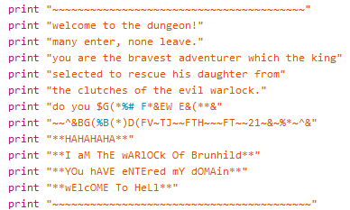
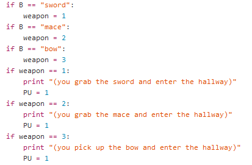

heres our Github Repository.
If I could change something, id make more alternate paths, more weapons, more monsters, and maybe a shop.
We struggled to get the alternate paths working. Heres a snippet of that code.
We had problems with some of these:
if F == "1":
print "**because Then you will never get your princess back**"
print "Well then come get us!!!"
warlock = 1
if F == "2":
Here are some images of the code and how they work.

This is the very beginning of the code, this is your first confrontation with the warlock. The code works by using print at the beginning of every line, and we put it inbetween quotation marks.

This is the weapon coding. We made this code by making variables at the beginning and running this code through the if statements.